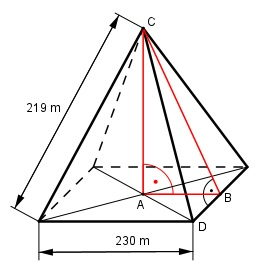

Pythagoras Aufgabe 32 Berechnen Sie die Höhe h einer quadratischen (Seitenlänge 230 m) und gleichseitigen (Seitenlänge 219 m) Pyramide und die Höhe s einer Seitenfläche in m.

AB = DB = 230 m/2 = 115 m DC = 219 m AC = hPyramide BC = s Satz von Pythagoras im Dreieck DBC: DC2 = DB2 + BC2 | -DB2 BC2 = DC2 - BC2 BC2 = 2192 m2 - 1152 m2 = 34 736 m2 |√ BC = s = 186,4 m Satz von Pythagoras im Dreieck ABC: BC2 = AB2 + AC2 |-AB2 AC2 = BC2 - AB2 AC2 = 34 736 m2 - 1152 m2 = 21 511 m2 |√ AC = hPyramide = 146,7 m